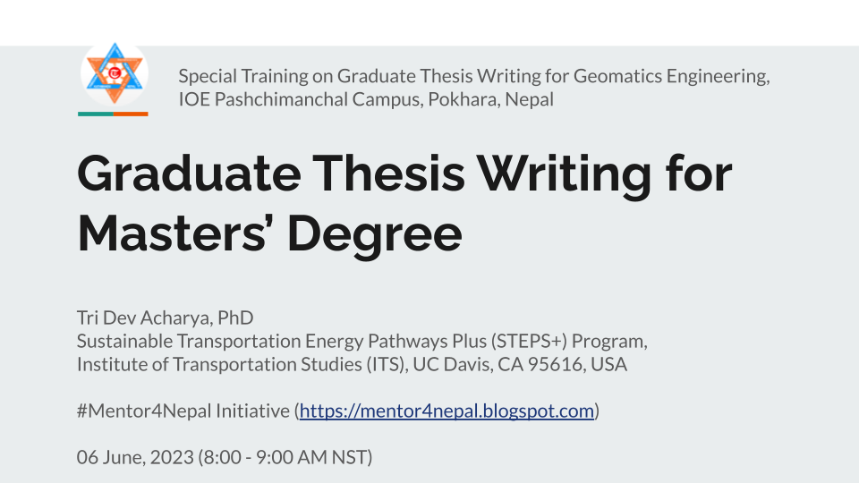
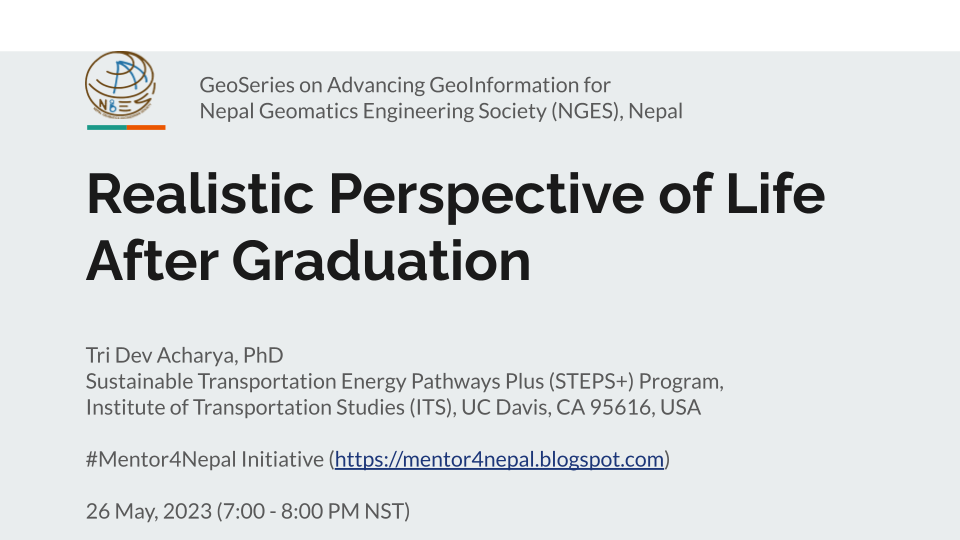
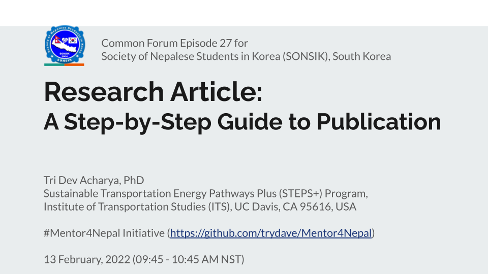
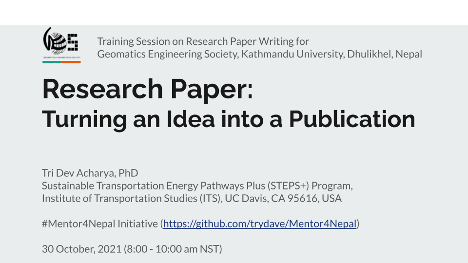

Recent Talks
This page contains information on recent talks. Click on the links to learn more about the talk or view it's recording. Also, feel free to reach out for invited talks and collaborations.
Graduate Thesis Writing for Masters’ Degree
A personal overview of a thesis for master's student and how to develop a proper research for it with tips.

Realistic Future Perspective of Life After Undergrad
A personal experience of life abroad with emphasis on combining personal success for positive impact in the society.

Research Article: A step-by-step guide to publication
A step-by-step guide to research development and publication in a journal.

Research Paper: Turning an Idea into a Publication
A personal guide on how to refine research idea and turn it into a successful journal publication.
